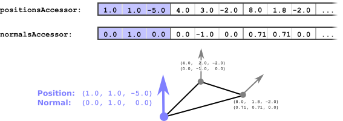

网格
这个简单网格上一节中的示例显示了mesh用一个mesh.primitive包含多个属性的。本节将解释网格基本体的含义和用法，如何将网格附加到场景图的节点，以及如何使用不同的材质渲染它们。
网格图元
每个mesh包含一个数组网格.基本体物体。这些网格基本体对象是较大对象的较小部分或构建块。网格图元汇总了有关如何渲染对象的各个部分的所有信息。
网格基本体属性
网格图元使用attributes字典。此几何数据通过参考存取器包含顶点属性数据的对象。关于accessor概念在缓冲区、缓冲区视图和访问器第节
在给定的示例中，在attributes字典。这些条目是指位置接受者以及normalsAccessor :
"meshes" : [
{
"primitives" : [ {
"attributes" : {
"POSITION" : 1,
"NORMAL" : 2
},
"indices" : 0
} ]
}
],
这些访问器的元素一起定义属于各个顶点的属性，如图9a所示。

索引和非索引几何图形
a的几何数据mesh.primitive可能是索引几何体或没有索引的几何体。在给定的示例中mesh.primitive包含索引几何学。这由indices属性，它引用索引为0的访问器，定义索引的数据。对于非索引几何体，将忽略此属性。
网格基本体模式
默认情况下，假设几何体数据描述三角形网格。对于索引几何，这意味着indices存取器假设包含单个三角形的索引。对于非索引几何体，假设顶点属性访问器的三个元素包含三角形的三个顶点的属性。
也可以使用其他渲染模式：几何体数据也可以描述单独的点、线或三角形条带。这由mode可以存储在网格图元中。表示如何解释其数据的常量值。例如，模式可以是zero当几何图形由点组成时，或4当它由三角形组成时。这些常数对应于GL常数点数或TRIANGLES分别是。见primitive.mode规范获取可用模式的列表
网格基本体材质
网格图元也可以引用material应使用此材质的索引进行渲染。在给定的例子中，没有材料，使对象使用仅定义对象的50%均匀灰色的默认材质进行渲染。材料和相关概念的详细说明将在材料第节
附加到节点的网格
在示例中简单网格部分，有一个scene，它包含两个节点，并且两个节点引用相同的节点网格实例，其索引为0：
"scenes" : [
{
"nodes" : [ 0, 1]
}
],
"nodes" : [
{
"mesh" : 0
},
{
"mesh" : 0,
"translation" : [ 1.0, 0.0, 0.0 ]
}
],
"meshes" : [
{ ... }
],
第二个节点有一个translation财产。如图所示场景和节点节，这将用于计算此节点的局部变换矩阵。在这种情况下，矩阵将导致沿x轴平移1.0。节点的所有局部变换的乘积将生成全局变换. 所有附加到节点上的元素都将使用这个全局变换进行渲染。
因此，在本例中，网格将被渲染两次，因为它附加到两个节点：一次是第一个节点的全局变换，即标识变换；一次是第二个节点的全局变换，即沿x轴平移1.0。